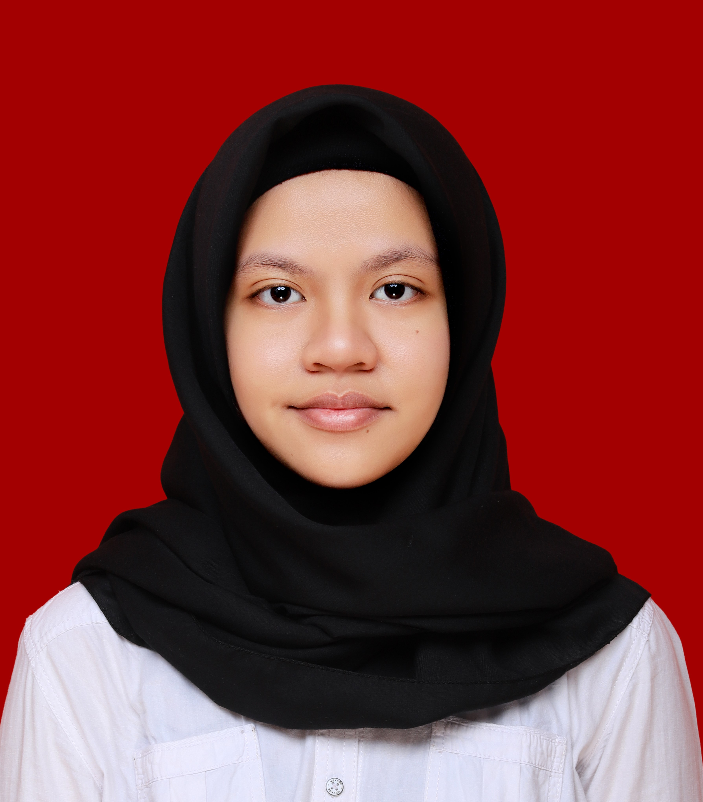

Adhistianita Safira Husna (1301213039)
Membuat HTTP Respon Message, baik menerima maupun mengembalikan response, Response 404 dan 405, melengkapi kode yang kurang, testing, mengerjakan laporan.

Siti Vanesa Rahma (1301213086)
Membuat TCP Socket, membangun koneksi dan Parsing HTTP, melengkapi kode yang kurang, testing, mengerjakan laporan.

Zefanya Darma Putri (1301213243)
Membuat file HTML, membangun kode untuk menerima dan membaca file dari system yang diminta client, melengkapi kode yang kurang, testing, mengerjakan laporan.